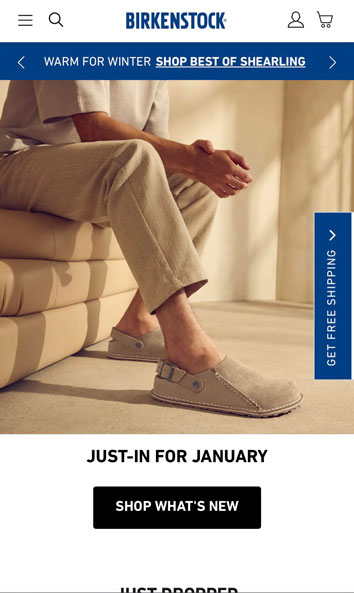
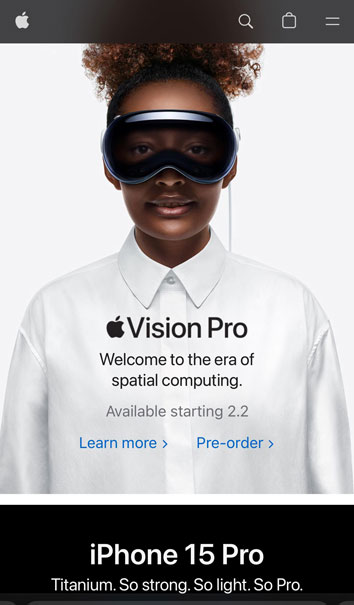

Rule of Thirds
Birkenstock
In the Birkenstock screenshot we can see the Rule of Thirds apply in the composition of the picture. Our focal point are their shoes and also we can see a repetition on the color, everything in the picture have the same hue. This helps to create a warm and cozy experience for the user.
Visual Hierarchy
Apple
In the Apple screenshot we can see white space and clean design applied. Our focal point is the woman using the Vision Pro product, and around her is a clean space that allows us to percibe better the product. This helps to create a better experience for the user.
Contrast
Under Armour
I feel Under Armour site is a good example of visual hierarchy, the first thing we notice are Curry tennis shoes in diferent directions. It's like if the product guide the user to the call to action "Shop Curry Brand". These steps allow the user to reach the conversions on the site.